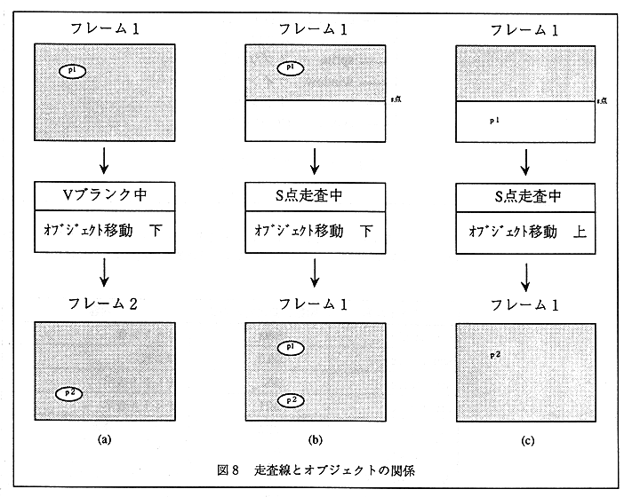

1) To eliminate flickering
∙ By executing the action after waiting for the V blank, the object on the next frame will be displayed in a completely new position. If the object moves during the display period, the screen will be very unsightly depending on the position and direction of the scan line. Figure 8 illustrates this. (a) moves correctly during V blank, so it is displayed correctly, but (b) and (c) move during scanning, so two are displayed or not displayed at all. .

2)
for timing
An accurate interval timer is required to move the character and background at a constant speed. Since V blank can be handled as an interval timer of 1/60 second, even if there is a change in the processing amount for one action loop, it can always be operated at a constant speed. However, if the action loop is not processed in one frame, it cannot be used as an accurate timer.